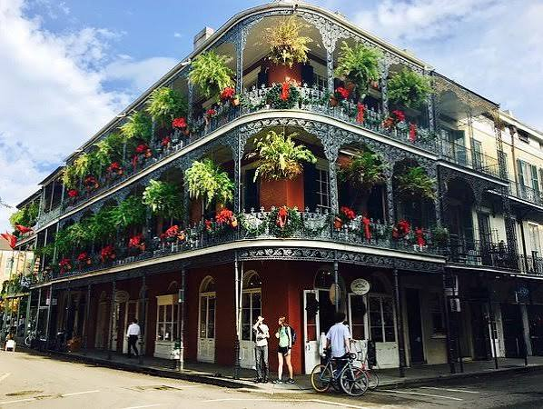
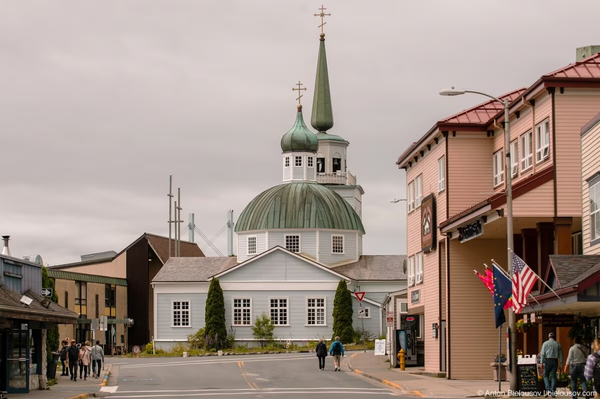
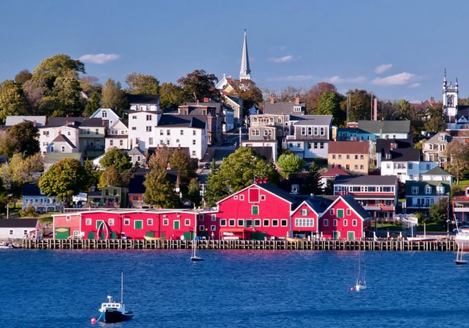
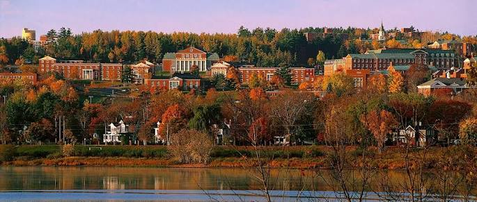

Тут я собрал штаты и провинции в которых я бы хотел учиться, вам нужно просто нажать на интересующий вас штат, и там краткое описание и учебные заведения.

Техас
"Штат одинокой звезды - The Lone Star state" Жаркий климат, море и очень традиционное население, даже в России помягче

Луизиана
Некая коллония Французов, с очень глубокими болотами и влажным климатот как в Китае

Аляска
Огромный северный штат с суровым климатом, горами и практически нетронутой природой

Новая Шотландия
Уютная морская провинция с небольшими городами и мягким климатом

Британская Колумбия
Горы, океан и крупные города. Красиво, но с климатом для любителей

Альберта
Просторная провинция с горами, сильной экономикой и холодным климатом

Нью-Брансуик
Спокойная и относительно недорогая провинция с лесами и побережьем